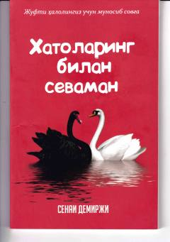

XBSevgi va nikohda kamchiliklarni qabul qilish orqali baxtli oila qurish haqida.
Bu kitob yozuvchi va psixoterapevt Senai Shemirji tomonidan yozilgan psixologik tadqiqot bo'lib, er-xotin munosabatlari, muhabbat va nikoh mavzularini o'rganadi. Muallif ideal oila qurish yo'llarini tahlil qilib, mavjud imkoniyatlardan unumli foydalanish va nikohga ma'no bag'ishlash haqida fikr yuritadi. Kitob Umida Adizova tomonidan o'zbek tiliga tarjima qilingan.